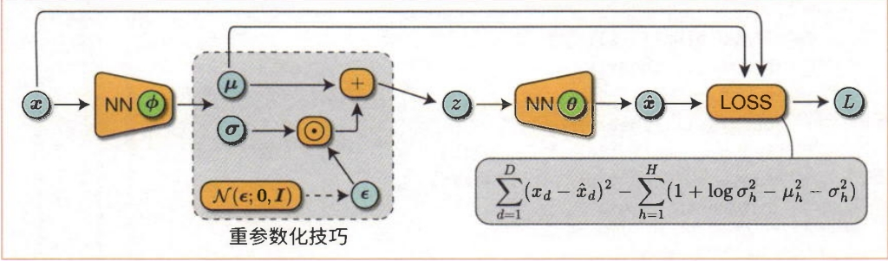
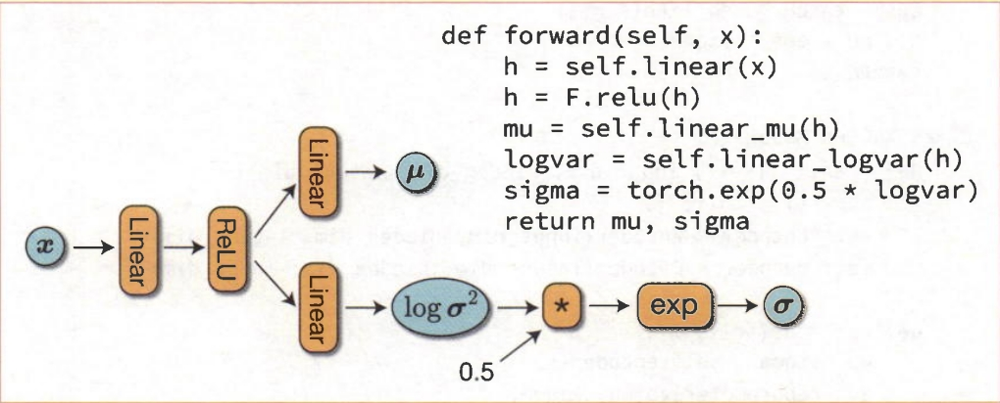
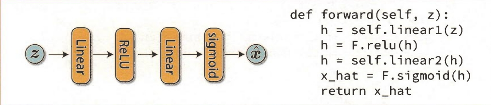
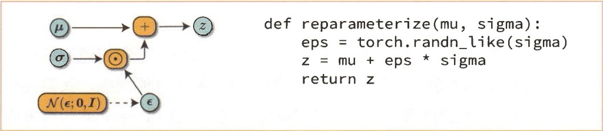
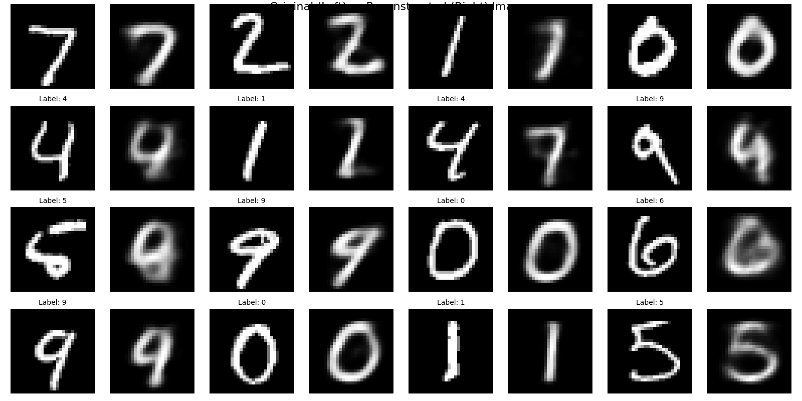
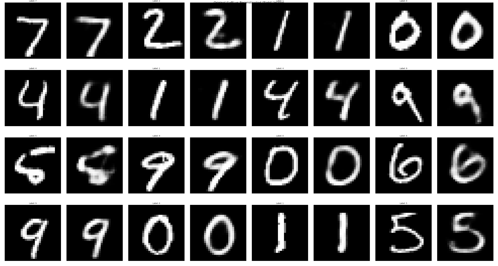
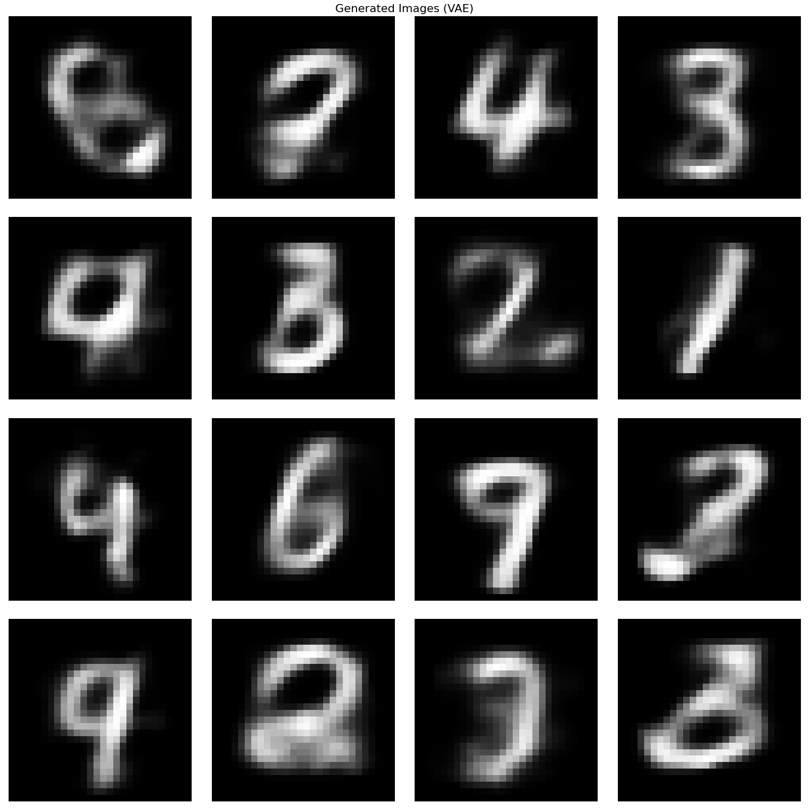
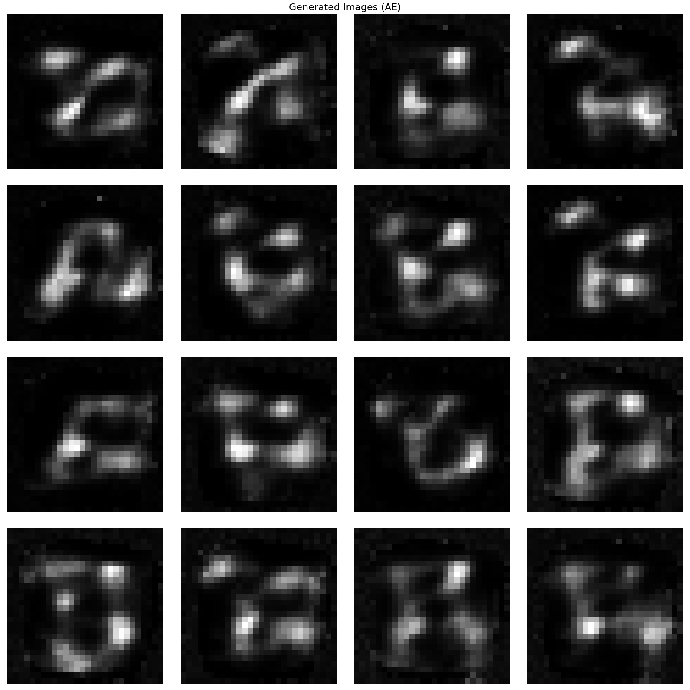

接下来进行VAE的实现。VAE能够学习高维和复杂数据的分布。
根据理论篇的内容可知，VAE的ELBO可以用以下式子表示:
\[\text{ELBO}(\mathbf{x}; \theta, \phi) = -\frac{1}{2}\|\mathbf{x} - \hat{\mathbf{x}}\|^2 - \frac{1}{2}\sum_{i=1}^{H}[\mu_i^2 + \sigma_i^2 - 1 - \log \sigma_i^2] + \text{const}\]
VAE的目标是最大化ELBO。而在神经网络的训练过程中，通常会设置最小化的函数作为损失函数。因此，我们将上式乘以 \(-1\) 后的式子作为损失函数，如下所示:
\[\text{Loss}(\mathbf{x}; \theta, \phi) = \|\mathbf{x} - \hat{\mathbf{x}}\|^2 + \sum_{i=1}^{H}[1 + \log \sigma_i^2 - \mu_i^2 - \sigma_i^2]\]
在上式中，ELBO被乘以 \(-2\)。这种乘以常数倍的做法是没有问题的，因为只要调整优化器的学习率，问题的设置最终就是相同的。此外，在优化参数时，常数项（\(\text{const}\)）可以省略。图1是这个损失函数的计算图。

图1 VAE损失函数的计算图
VAE的网络结构定义如下:
import torch
import torch.nn as nn
import torch.nn.functional as F
class Encoder(nn.Module):
def __init__(self, input_dim, hidden_dim, latent_dim):
super().__init__()
self.linear = nn.Linear(input_dim, hidden_dim)
self.linear_mu = nn.Linear(hidden_dim, latent_dim) # 输出均值
self.linear_logvar = nn.Linear(hidden_dim, latent_dim) # 输出log方差
def forward(self, x):
h = F.relu(self.linear(x))
mu = self.linear_mu(h)
logvar = self.linear_logvar(h)
sigma = torch.exp(0.5 * logvar) # 从logvar计算标准差
return mu, sigma
class Decoder(nn.Module):
def __init__(self, latent_dim, hidden_dim, output_dim):
super().__init__()
self.linear1 = nn.Linear(latent_dim, hidden_dim)
self.linear2 = nn.Linear(hidden_dim, output_dim)
def forward(self, z):
h = F.relu(self.linear1(z))
x_hat = F.sigmoid(self.linear2(h))
return x_hat
class VAE(nn.Module):
def __init__(self, input_dim, output_dim, hidden_dim, latent_dim):
super().__init__()
self.encoder = Encoder(input_dim, hidden_dim, latent_dim)
self.decoder = Decoder(latent_dim, hidden_dim, output_dim)
def forward(self, x):
mu, sigma = self.encoder(x) # 编码:x -> (μ, σ)
z = self._reparameterize(mu, sigma) # 重参数化:z ~ N(μ, σ²)
x_hat = self.decoder(z) # 解码:z -> x_hat
return x_hat, mu, sigma
def _reparameterize(self, mu, sigma):
eps = torch.randn_like(sigma) # 从标准正态分布采样
z = mu + eps * sigma # 重参数化
return z
def loss_function(x_hat, x, mu, sigma):
batch_size = x.shape[0]
# 重构损失
L1 = F.mse_loss(x_hat, x, reduction='sum')
# KL散度损失
L2 = -torch.sum(1 + torch.log(sigma ** 2) - mu ** 2 - sigma ** 2)
return (L1 + L2) / batch_size其中Encoder输出分布的参数（\(\mu\) 和 \(\sigma\)），通过重参数化技巧采样潜在向量 \(z\)，然后通过Decoder重构。损失函数包含重构损失和KL散度损失。
上面的代码将Encoder类实现为两层神经网络。前向传播的 forward 方法的计算图如图2所示:
def forward(self, x):
h = self.linear(x)
h = F.relu(h)
mu = self.linear_mu(h)
logvar = self.linear_logvar(h)
sigma = torch.exp(0.5 * logvar)
return mu, sigma
图2 编码器的前向传播的计算图和代码
也可以考虑让神经网络使用的线性变换（nn.Linear）直接输出标准差 \(\sigma\)，但必须满足 \(\sigma\) 的每个元素都是正数的约束条件。因此，我们让神经网络输出方差的对数 \(\log \sigma^2\)。\(\log \sigma^2\) 的取值范围为 \(-\infty\) 到 \(+\infty\)，因此没有线性变换的输出的约束条件的限制。线性变换输出 \(\log \sigma^2\) 后，根据以下计算式求出 \(\sigma\):
\[\sigma = \exp(0.5 \cdot \log \sigma^2)\]
Decoder类也是一个两层神经网络（参见图3）。前向传播的最后一层通过 sigmoid 函数输出 \(0.0\) 和 \(1.0\) 之间的实数。为了方便训练，我们要将MNIST图像归一化为 \(0.0\) 和 \(1.0\) 之间的数据，因此会使用 sigmoid 函数来匹配这个范围。
def forward(self, z):
h = self.linear1(z)
h = F.relu(h)
h = self.linear2(h)
x_hat = F.sigmoid(h)
return x_hat
图3 解码器的前向传播的计算图和代码
接下来是VAE类，它结合了Encoder类和Decoder类来定义损失函数。代码如下所示:
def reparameterize(mu, sigma):
eps = torch.randn_like(sigma)
z = mu + eps * sigma
return z
class VAE(nn.Module):
def __init__(self, input_dim, hidden_dim, latent_dim):
super().__init__()
self.encoder = Encoder(input_dim, hidden_dim, latent_dim)
self.decoder = Decoder(latent_dim, hidden_dim, input_dim)
def get_loss(self, x):
mu, sigma = self.encoder(x)
z = reparameterize(mu, sigma)
x_hat = self.decoder(z)
batch_size = len(x)
L1 = F.mse_loss(x_hat, x, reduction='sum')
L2 = torch.sum(1 + torch.log(sigma ** 2) - mu ** 2 - sigma ** 2)
return (L1 + L2) / batch_size上面代码中的函数 reparameterize(mu, sigma) 是重参数化技巧的实现，它的计算图如图4所示:

图4 重参数化技巧的计算图和代码
torch.randn_like(sigma) 生成了与 sigma 相同形状的张量。该张量的每个元素都是基于标准正态分布（均值为 \(0\)，标准差为 \(1\)）随机采样的。
代码中的 infer1 部分展示了VAE的重建能力:
# 模型推理1 - 从测试集采样图像，查看重构效果
if infer1:
model.eval()
with torch.no_grad():
# 从测试集第一个批次中取样本
x, labels = next(iter(test_loader))
x_test = x[:sample_size].view(-1, input_dim).to(device)
labels_test = labels[:sample_size]
# 通过 VAE 进行编码-解码重构
x_reconstructed, mu, sigma = model(x_test)
# 转换为图像格式用于显示
original_images = x_test.view(sample_size, 1, 28, 28).cpu()
reconstructed_images = x_reconstructed.view(sample_size, 1, 28, 28).cpu()
labels_cpu = labels_test.numpy()代码说明: 1. 获取测试样本:从测试集第一个批次中取 sample_size 个样本 2. 编码-重参数化-解码重构:通过 model(x_test) 进行前向传播，得到重构图像和分布参数 3. 格式转换:将张量转换为图像格式（28×28）用于可视化

图5 VAE的重建能力:左列为原始图像，右列为重构图像

图6 AE的重建能力:左列为原始图像，右列为重构图像
图5展示了VAE的重建能力，两者非常相似，说明潜在空间成功捕获了输入的关键信息。图6展示了AE的重建能力作为对比。与AE相比，VAE的重建质量可能略低（上图其实不是很明显），但这是为了获得生成能力而付出的代价。
代码中的 infer2 部分展示了VAE的生成能力:
# 模型推理2 - 生成新图像（从潜在空间随机采样）
if infer2:
model.eval()
with torch.no_grad():
# 从标准正态分布采样潜在向量
z = torch.randn(sample_size, latent_dim).to(device)
x = model.decoder(z) # 仅使用解码器生成图像
generated_images = x.view(sample_size, 1, 28, 28).cpu()关键优势: - 从标准正态分布随机采样潜在向量 \(z\) - 直接通过解码器生成图像 - 结果:生成的图像是有意义的，因为VAE的潜在空间是正则化的

图7 VAE的生成能力

图8 AE的生成能力
图7展示了VAE的生成能力:从标准正态分布随机采样潜在向量 \(z\)，直接通过解码器生成图像。结果生成的图像是有意义的，这是因为VAE的潜在空间是正则化的，整个空间都具有生成能力。图8展示了AE的生成能力作为对比:从标准正态分布随机采样潜在向量 \(z\)，通过解码器生成的图像通常是无意义的或模糊的，这是因为AE的潜在空间是非正则化的，存在大量“空洞”区域。
| 特性 | AE | VAE |
|---|---|---|
| 潜在空间 | 非正则化，存在空洞 | 正则化，接近标准正态分布 |
| 编码器输出 | 确定的潜在向量 \(z\) | 分布的参数 \((\mu, \sigma)\) |
| 损失函数 | 仅重构损失 | 重构损失 + KL散度 |
| 重建质量 | 通常更好 | 略低（为了生成能力） |
| 生成能力 | 有限，随机采样生成无意义图像 | 整个空间都具有生成能力 |
| 应用场景 | 主要用于数据压缩 | 数据压缩 + 数据生成 |
核心思想:VAE通过正则化潜在空间，牺牲了部分重建质量，但获得了强大的生成能力。这使得VAE不仅可以用于数据压缩，还可以用于生成新的数据样本。
变分自编码器（VAE） 通过以下关键创新解决了AE的生成问题:
VAE的成功证明了正则化潜在空间对于生成模型的重要性，为后续的生成模型（如GAN、扩散模型）奠定了基础。